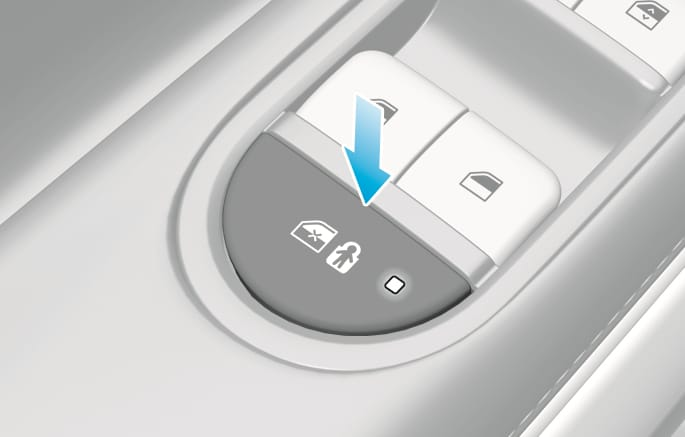
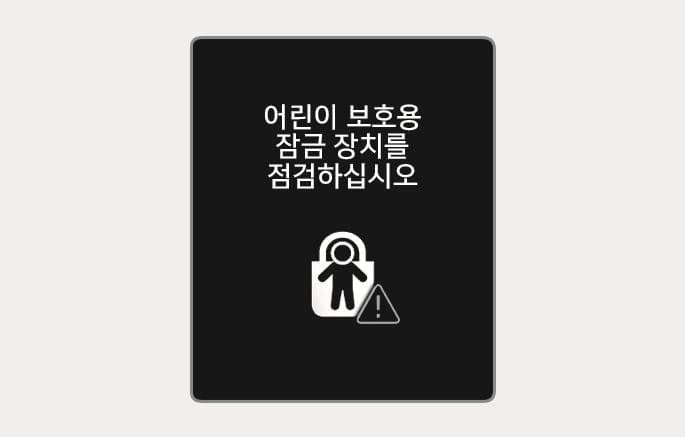

전자식 차일드 락

2C_ChildProtectRearDoorLockButton
운전석 도어에 있는 차일드 락 버튼을 눌러 표시등이 켜지면 뒷좌석의 도어를 차 안에서 열 수 없습니다.
-
차일드 락 기능이 작동 중이면 뒷좌석 도어 유리창도 열거나 닫을 수 없습니다.
자세한 내용은 5장 내 '유리창 열림/닫힘 장치'를 참고하십시오.
-
차일드 락 기능은 자동으로 작동하지 않으며, 운전자가 차일드 락 버튼을 눌러 기능을 켜야 작동합니다.
-
차일드 락 기능이 작동 중인 상태(버튼 내 표시등 켜짐)에서 시동을 끈 후 3분이 지나면 버튼 내 표시등이 꺼지고 잠금을 해제할 수 없습니다. 잠금을 해제하려면 시동 'ACC' 또는 'ON' 상태에서 차일드 락 버튼을 누르십시오.
-
차일드 락 기능이 작동 중인 상태(버튼 내 표시등 켜짐)에서 배터리를 분리하거나 배터리가 방전되면 버튼 내 표시등이 꺼지고 잠금을 해제할 수 없습니다. 배터리에 다시 전원이 공급되면, 차일드 락 버튼 내 표시등 상태와 뒷좌석 도어의 차일드 락 실제 상태가 일치하도록 차일드 락 버튼을 한 번 눌러주십시오.
-
차일드 락 기능이 작동 중인 상태(버튼 내 표시등 켜짐)에서 에어백이 펼쳐지면 차일드 락 기능이 자동으로 꺼지고 뒷좌석 도어의 잠금이 해제됩니다.
-
전자식 차일드 락 기능이 적용된 차량은 수동으로 조작하는 어린이 보호용 잠금 장치를 제공하지 않습니다.
주행 중에 어린이가 도어를 열 경우 부상을 당하거나 사망할 수도 있습니다.
어린이가 차 안에서 도어를 여는 것을 방지하기 위해, 어린이를 태웠을 때는 반드시 차일드 락 기능을 켜십시오.

2C_CheckChildProtectRearDoorLock
전자식 차일드 락 기능에 이상이 발생하면 클러스터에 경고문이 표시됩니다. 가까운 당사 직영 하이테크센터나 블루핸즈에서 점검을 받으십시오.
안전 하차 보조 시스템은 차량이 정차한 후에 후측방에서 접근하는 차량이 감지되면 운전자가 차일드 락 버튼을 눌러도 차일드 락이 해제되지 않도록 하여 뒷좌석 탑승자가 도어를 여는 것을 방지하는 시스템입니다.
자세한 내용은 7장 '안전 하차 보조 (SEA)'을 참고하십시오.